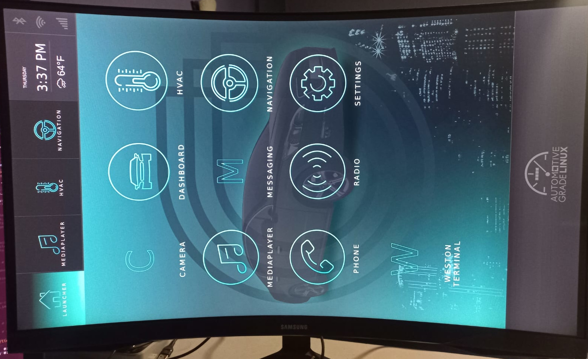
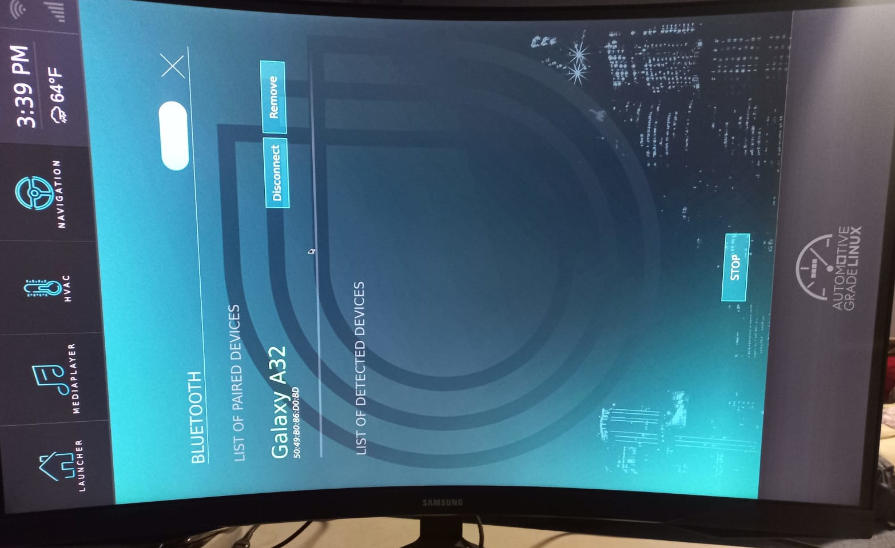
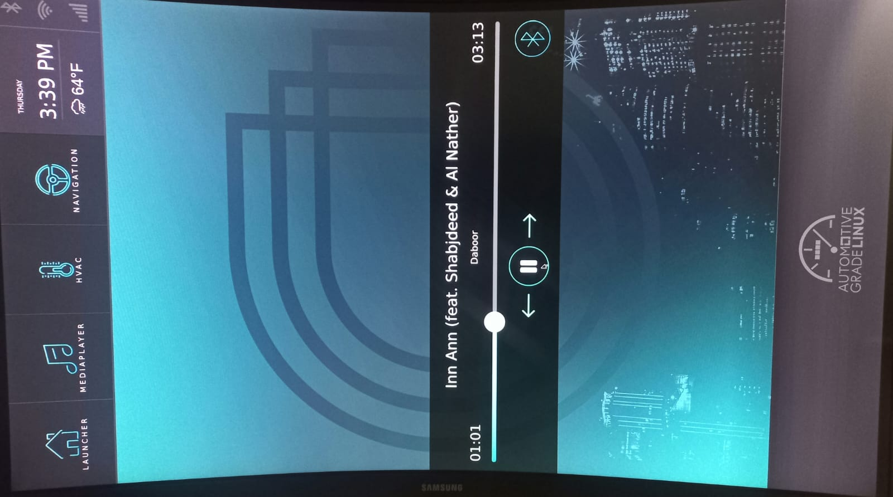
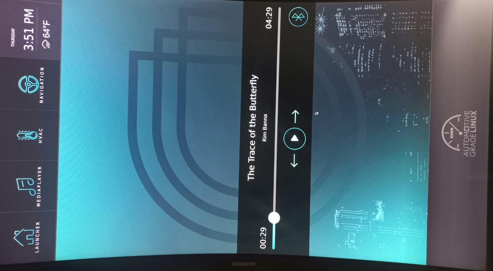
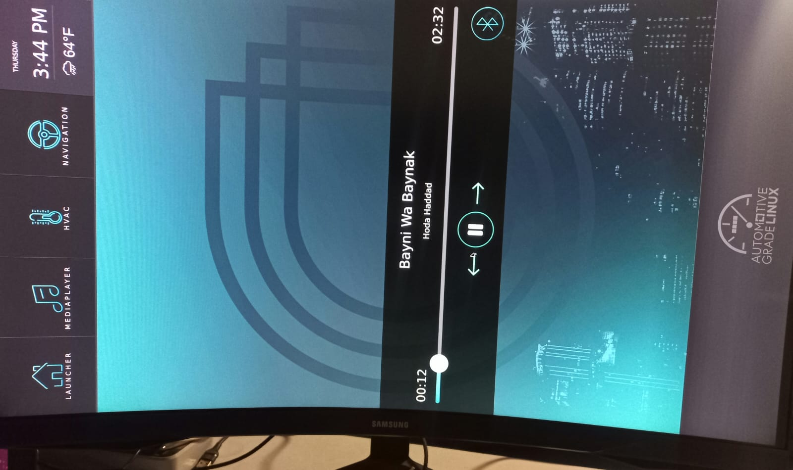

Achievements
camera_linux Flutter plugin by running the example app and confirming the camera stream end-to-end
Details
The first task during bonding was getting AGL Vimba (21.90.0) running on both targets.
On QEMU (qemux86-64), this involved building the image with Yocto and booting it via runqemu.
On the Raspberry Pi, the image was flashed to an SD card and booted directly on hardware.
Both targets required networking configuration to allow SSH access for development.
Running the wifi required some instructions
$ rfkill unblock wifi
$ ip link set wlan0 up
$ wpa_passphrase "SSID" "password" > /tmp/wpa.conf
$ wpa_supplicant -B -i wlan0 -c /tmp/wpa.conf
$ udhcpc -i wlan0
$ ip addr show wlan0

With AGL running, the next step was confirming the camera pipeline worked on both targets. On QEMU, a v4l2 loopback device was used to simulate a camera source. On Raspberry Pi, a physical usb-camera module was connected and tested.
To validate the Flutter camera integration, the camera_linux plugin was tested directly.
This is the Linux federated implementation of the Flutter camera package.
The plugin's example app was run on the target to exercise the full capture path:
plugin, PipeWire, then the V4L2 device.
Once the stream was live, qpwgraph was used to inspect the PipeWire node graph
and confirm the exact routing of the camera stream from the source node through to the consumer,
verifying that the correct SPA plugin was active and no nodes were misconnected.
Part of the bonding period was exploring the broader AGL stack beyond the camera. Bluetooth was tested on the Raspberry Pi by pairing a phone and confirming the connection stayed stable. The AGL music player app was then tested through the A2DP Bluetooth profile to stream audio from the paired device. The playback worked correctly, which confirmed that the Bluetooth stack and the media player integration in AGL were functioning as expected on the target hardware.




A big part of bonding was discussing with the mentor where the real difficulty lies. Getting the camera pipeline reliably working on real hardware (PipeWire, libcamera, and the SPA plugin layer) was the hardest and most unpredictable part, and it needed to be tackled first before any higher-level Flutter or AI work could be trusted. The mentor advised keeping the early weeks tight on that foundation before expanding scope.
Understanding how to contribute to AGL via Gerrit was essential before writing any code. This included learning how to submit changes, respond to review comments, manage patch sets, and understand the +1/+2 label system used by AGL maintainers.
Challenges & learnings
Challenge
Getting camera streams to work correctly on both QEMU and real hardware required careful testing of the camera_linux plugin and debugging the PipeWire node graph to understand exactly where the stream was being lost.
Key learning
Setting up both QEMU and Raspberry Pi targets early gives a big advantage. It makes it easy to quickly verify whether issues are hardware-specific or general.